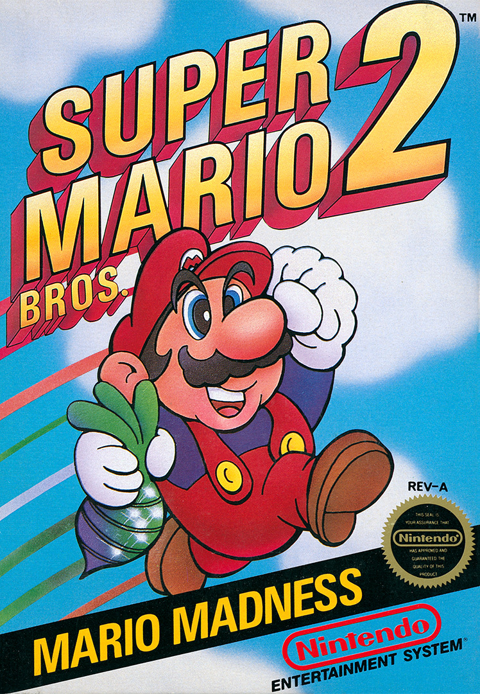

Super Mario Franchise (1985 - 1996)
The franchise revolves around the adventures of an extensive cast of recurring characters.
The main protagonist of the franchise, the titular Mario, is a fictional Italian-American plumber who serves as the hero of a realm called the Mushroom Kingdom,
which he endeavors to defend by traversing through stages filled with obstacles and enemies.
His arch-nemesis is Bowser, the king of the Koopas, a race of evil-driven anthropomorphic turtles.
Bowser is responsible for the vast majority of the Mushroom Kingdom's invasions, and almost always appears as the final boss,
who consistently attempts to put an end to the escapades of Mario and his friends.
Mario's younger but taller twin brother, Luigi, often participates in his adventures alongside him.
In early games, he was playable only in the two-player mode as a simple palette swap, but with the passage of time, he went on to gain more significant roles.
The Mushroom Kingdom's ruler, Princess Peach, is Mario's love interest and recurring damsel in distress.
She repeatedly gets kidnapped by Bowser and has to be rescued by Mario, but occasionally serves as a protagonist herself.
Her kingdom's inhabitants and her personal servants are the Toads, a species of fungal creatures who often support Mario during his adventures.
Mario Box Art
 |
 |  |
 |